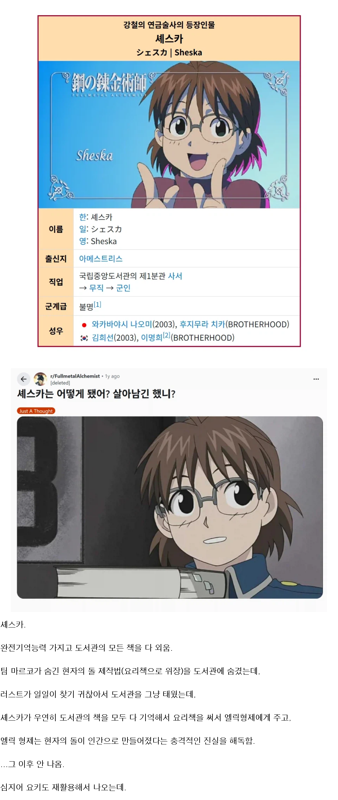

https://bbs.ruliweb.com/best/board/300143/read/77337705

https://bbs.ruliweb.com/best/board/300143/read/77337705

데우스 엑스 마키나
작가가 저 캐릭 까먹었다고 들었음ㅋㅋㅋㅋㅋㅋㅋ
그럼 조연을 어디까지 신경써줘야하는데 ㅋㅋ
노조의 몇안되는 자위수단이라서 존중해줘야됨ㅋㅋ
쟨 이미 평생해야할 문서복구업무 들고 있는 애인데 뭐하러 본편에 나오냐...조용히 일하고 있겠지
도서관 책 다 복구할려면 평생 일 해야 될건데 재등장할 시간 어디있겠음
보자기를 다 접을 순 없다고
기껏 찾은 구멍이 저 단역 캐릭터 하나라는게 참
강철노조 정신승리 ㄷㄷㄷ
잘 살고있겠지뭐
도서관 책들 사본 만들어서 다시 채워넣고 있겠지 뭐
구 애니판에서는 그래도 윈리랑 같이 슬로스 정체 알아낼려고 등장했던걸로 아는데
??? : 넌 이제 필요없어
안예뻐서 안나와도됨
예쁜데
이새끼랑 제반니 있으면 책 복사 뚝딱이겠네
만약 강연금 뒷이야기나오면 저 여자가 흑막과 소동의 중심으로 이야기 짤 수 있을듯
완벽한 금속의 연금술사가 그럴리가 있어?
ROD 주인공 닮아서 걍 작가끼리 친한가 했는데
안나오는게 행복한거 아닐까?